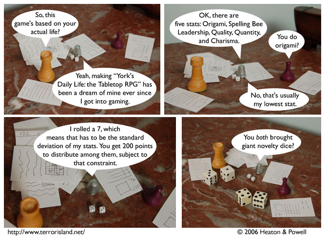

Strip #87
— Monday, January 1, 2007
York has higher quality than quantity.
Notes, Thoughts, &c.
Ben’s Notes
Lewis’s Notes
Terror Island fans, I hope you all had an awesome New Years. Join us in 2007, when we radically alter the basic premise of the comic to “Terror Island 2: Space Terror Island (from hell)” starring Terror Island as a heroic semiotician willing to fight the rising tide of, umm, anti-semiotics.